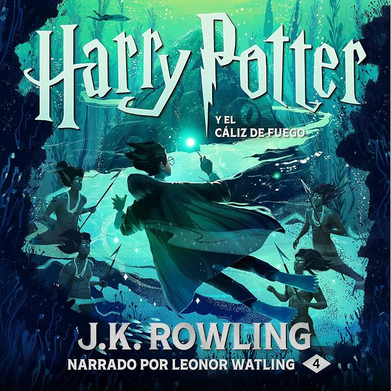
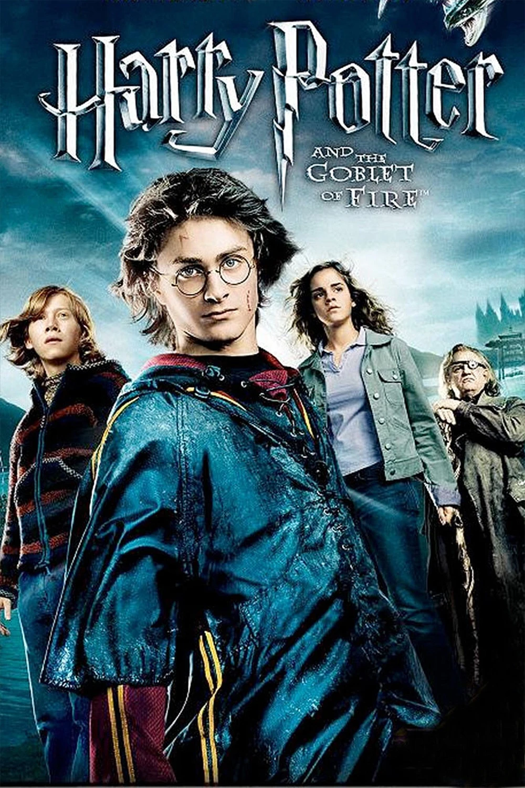

Bienvenido al sitio web dedicado a Harry Potter, donde podrás encontrar información sobre los libros, personajes y películas de esta famosa saga.
Bienvenido al mundo de Harry Potter
Harry Potter es una serie de novelas escritas por la autora británica J.K. Rowling. La historia sigue las aventuras de un joven mago llamado Harry Potter y sus amigos Hermione Granger y Ron Weasley, quienes son estudiantes en la Escuela de Magia y Hechicería Hogwarts.
La serie abarca temas como la amistad, el amor, la valentía y la lucha entre el bien y el mal.
A lo largo de los siete libros, Harry y sus amigos enfrentan numerosos desafíos y enemigos, incluyendo al oscuro mago Lord Voldemort, quien busca la inmortalidad y el dominio sobre el mundo mágico.
La serie ha sido adaptada a una exitosa franquicia cinematográfica, y ha dejado un impacto duradero en la cultura popular, inspirando a millones de lectores y espectadores en todo el mundo.
Libros de Harry Potter
Harry Potter y la piedra filosofal
Harry Potter y la cámara secreta
Harry Potter y el prisionero de Azkaban
Harry Potter y el cáliz de fuego

Harry Potter y la Orden del Fénix
Harry Potter y el misterio del príncipe
Harry Potter y las Reliquias de la Muerte
Personajes Principales
Harry Potter
Hermione Granger
Ron Weasley
Albus Dumbledore
Severus Snape
Lord Voldemort
Peliculas de Harry Potter
Harry Potter y la piedra filosofal
Harry Potter y la cámara secreta
Harry Potter y el prisionero de Azkaban
Harry Potter y el cáliz de fuego

Harry Potter y la Orden del Fénix
Harry Potter y el misterio del príncipe
Harry Potter y las Reliquias de la Muerte - Parte 1
Harry Potter y las Reliquias de la Muerte - Parte 2
Datos Curiosos
La serie de Harry Potter ha vendido más de 500 millones de copias en todo el mundo.
Los libros han sido traducidos a más de 80 idiomas.
La autora, J.K. Rowling, escribió el primer libro en una cafetería de Edimburgo.
El personaje de Harry Potter fue inspirado por la propia infancia de Rowling y su amor por la lectura.